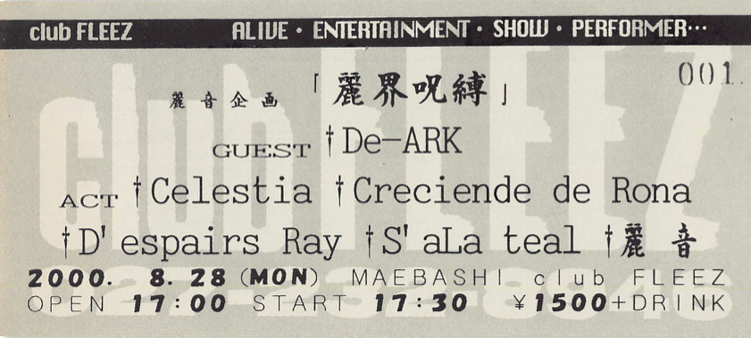

Celestia, Despairs Ray, Crecien de Rona, S'aLateal, De-ARK
1.隷
2.su.i.cide
MC
3.絹の絲と蜘の意図
4.「less」
5.行
6.浮生麗終
私が初めて見た麗音のライブ。
この日は麗音主催のイベントだけあって最後に出演しました。麗音が登場する際に、ステージに縄が張ってありました。ちなみにこの日の衣装は「絹蜘」のジャケ写とほぼ一緒でした。
lessという曲が切なくてとても良かったです。特にイントロのところで青い照明がステージを照らした瞬間が曲の雰囲気に合っていたのが印象的でした。
ライブが終わる頃にはすっかり麗音の隷になってしまいました…♡